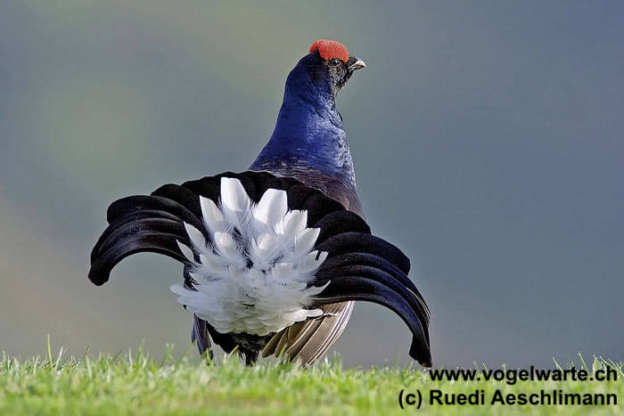
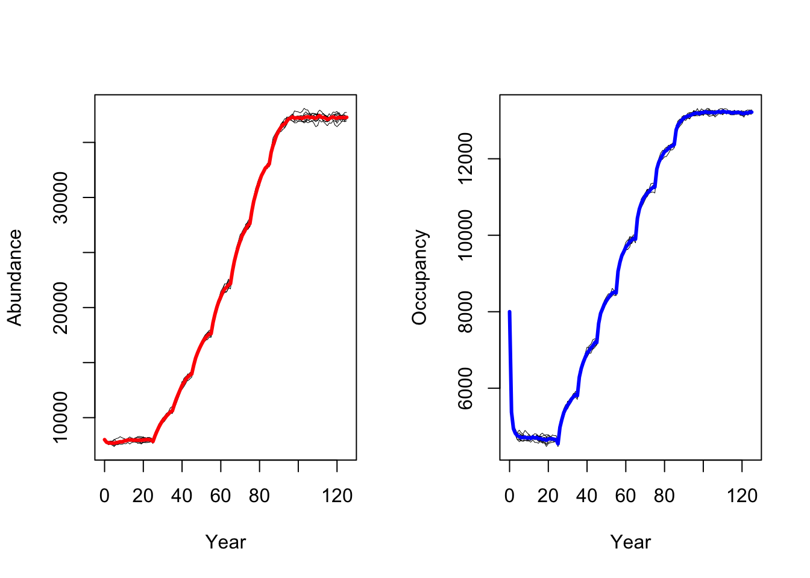

Black grouse range dynamics
RStudio project
Open the RStudio project that we created in the first session. I recommend to use this RStudio project for the entire course and within the RStudio project create separate R scripts for each session.
- Create a new empty R script by going to the tab “File”, select “New File” and then “R script”
- In the new R script, type
# Session 9: Black grouse range dynamics in RangeShiftRand save the file in your folder “scripts” within your project folder, e.g. as “9_RS_grouse.R”

This practical shows how spatially-explicit population models or
spatially-explicit individual-based models like RangeShiftR
(G. Bocedi et al. 2014; Greta Bocedi et al. 2021;
Malchow et al. 2021) can be used for simulating species range
dynamics under scenarios of global change. We illustrate this by
re-implementing the black grouse case study described by Zurell et al. (2012). Specifically, we will
simulate extinction risks and climate change-induced range dynamics of
black grouse (Lyrurus tetrix) in Switzerland, and run a (very
slim) sensitivity analysis to assess how model predictions are affected
by changes in the underlying parameters. The original black grouse
individual-based model was not based on RangeShifter but was implemented
from scratch. To accommodate the simulations in
RangeShiftR, we have to adapt some modelling decisions.
1 Black grouse model
First, we set up all the parameters modules that we need to run a
RangeShiftR simulation (see schematic figure in Practical
8).
1.1 Set up directories and data
We need to set up the folder structure again with a folder containing the models of this practical and the three sub-folders named ‘Inputs’, ‘Outputs’ and ‘Output_Maps’. To do so, use your file explorer on your machine, navigate to the “models” folder within your project, and create a sub-folder for the current practical, e.g. “RS_BlackGrouse”. Next, return to your RStudio project and store the path in a variable. This can either be the relative path from your R working directory or the absolute path.
# Set path to model directory
dirpath = "models/RS_BlackGrouse/"# load required packages
library(RangeShiftR)
library(terra)
library(raster)
library(rasterVis)
library(viridis)
library(tidyverse)
library(ggplot2)
# Create sub-folders (if not already existing)
if(!file.exists(paste0(dirpath,"Inputs"))) {
dir.create(paste0(dirpath,"Inputs"), showWarnings = TRUE) }
if(!file.exists(paste0(dirpath,"Outputs"))) {
dir.create(paste0(dirpath,"Outputs"), showWarnings = TRUE) }
if(!file.exists(paste0(dirpath,"Output_Maps"))) {
dir.create(paste0(dirpath,"Output_Maps"), showWarnings = TRUE) }Download the input files here and put these into the ‘Inputs’ folder.
1.2 Landscape settings
The underlying landscape with habitat suitability is derived from a correlative species distribution model as have been introduced in practicals 5-7 (SDM; Zurell et al. (2020)). In Zurell et al. (2012), SDMs were fit to species occurrences observed between 1993-1996 (Schmid et al. 1998) and to climate data and land use data. Here, we do not use exactly the same maps from the original publication but re-ran the SDMs using newer climate data from the CHELSA climatologies (https://chelsa-climate.org/) and CORINE land use data (https://land.copernicus.eu/pan-european/corine-land-cover). We used four different algorithms to fit SDMs (generalised linear models - GLMs, generalised additive models - GAMs, random forests, and boosted regression trees) and built ensembles by averaging predictions over the four different algorithms. All models showed excellent predictive performance (similar to performance measures reported in Zurell et al. (2012)). For simplicity, we only made future predictions to a single climate change scenario for the period 2061-2080 (based on the CESM1-BGC earth system model and RCP4.5). We then interpolated predicted habitat suitability between 2000 and 2070 in ten-year intervals, and rescaled these to values ranging 0-100 %.
Each ascii file contains habitat suitability [0..100]. Let’s take a look at these.
# Read in border mask of Switzerland
CH_mask <- terra::rast(paste0(dirpath,'Inputs/CH_mask.tif'))
# For displaying the landscape maps, we read them from file, make multi-layer SpatRaster
r_lc <- terra::rast(
paste0(dirpath,'Inputs/',
grep('BlackGrouse_SDMpredictions', dir(paste0(dirpath,'Inputs/')), value=T)
))
# and then mask them using the Swiss border mask
plot(terra::mask(r_lc, CH_mask))The maps show that black grouse habitat is mainly distributed in the mountains but currently does not stretch right into the alpine zones. Under climate change, habitat is predicted to move uphill.
We want to run simulations under static environmental conditions and under climate change, and thus need to set up two different landscape modules, a static landscape and a dynamic landscape.
1.2.1 Static landscape
The static landscape module only uses the first habitat suitability
map for current climate. We use a cell-based model with a 1km resolution
and continuous habitat suitability provided in percent quality. We will
implement a stage-structured model and, thus, the parameter
K_or_DensDep describes the strength of density dependence
1/b (Greta Bocedi et al. 2021; Malchow
et al. 2021). Thereby, b can be interpreted as the area
per individual [ha/ind] at which an individual will feel density
dependence, meaning the area below which it feels the population is too
dense. We initially assume b is 2 ha/ind, meaning that density
dependence will hit in if an individual has less than 2 ha of
high-quality habitat left. You could also interpret it as the area that
the individual will defend as territory and will not allow any
conspecifics in. Observed maximum densities of black grouse in the field
were reported around 10 ind/km2 (Zurell et al. 2012). Yet, it is less clear what
area of their home range they would defend as territory.
# Set static landscape parameters
land <- ImportedLandscape(LandscapeFile = "BlackGrouse_SDMpredictions2000.asc",
Resolution = 1000, # resolution of one grid cell in m
HabPercent = TRUE, # habitat map includes percentage of suitability
K_or_DensDep = 0.5) # strength of density dependence 1/b1.2.2 Dynamic landscape
In the dynamic landscape module, we have to indicate in which year of the simulation the different landscape maps are used. In line with Zurell et al. (2012), we used a spinup period of 25 years during which we simulate population dynamics in the static landscape in order to reduce the effects of initial conditions. Otherwise, we use the same parameters for density dependence as in the static landscape module.
# Numbers of spinup years in dynamic landscape
spinup <- 25
# Set dynamic landscape parameters
land_cc <- ImportedLandscape(LandscapeFile = c("BlackGrouse_SDMpredictions2000.asc",
"BlackGrouse_SDMpredictions2010.asc",
"BlackGrouse_SDMpredictions2020.asc",
"BlackGrouse_SDMpredictions2030.asc",
"BlackGrouse_SDMpredictions2040.asc",
"BlackGrouse_SDMpredictions2050.asc",
"BlackGrouse_SDMpredictions2060.asc",
"BlackGrouse_SDMpredictions2070.asc"),
DynamicLandYears = c(0, spinup, spinup+10, spinup+20, spinup+30, spinup+40, spinup+50, spinup+60), # years to switch landscapes
Resolution = 1000, # resolution of one grid cell
HabPercent = TRUE, # habitat map includes percentage of suitability
K_or_DensDep = 0.5) # strength of density dependence 1/b1.3 Demography settings
In black grouse, females are the limiting sex regarding reproduction and dispersal and we hence use an asexual model (Zurell et al. 2012). We consider stage structured populations and distinguish two stages, juveniles that will disperse and adult hens that start reproducing at yearling age. Some studies indicate that yearlings produce less offspring then adults (Caizergues and Ellison 2000) but we here follow the scheduling suggested in (Zurell et al. 2012).
The original black grouse model distinguished different clutch sizes, which is not possible in RangeShifter. We, thus, have to average clutch sizes to obtain a mean fecundity. Check out the original parameters in Table 2 of Zurell et al. (2012) and try to match those parameters with our transition matrix:
# Define transition matrix
(trans_mat <- matrix(c(0, 0.6,1.646, 0.5), nrow = 2, byrow = F)) ## [,1] [,2]
## [1,] 0.0 1.646
## [2,] 0.6 0.500# stage 0 : dispersing juveniles; stage 1: adult, reproducing hensIn the demographic module, we assume that density dependence only acts on survival (Zurell et al. 2012) and that individuals reach a maximum age of 10 years.
# Define stage structured module
stg <- StageStructure(Stages = 2, # 2 stages
TransMatrix = trans_mat,
MaxAge = 10,
FecDensDep = F ,
SurvDensDep = T , # Only mortality increases with density
SurvDensCoeff = 1 # Density dependence relative to 1/b
)
# Define demography module
demo <- Demography(StageStruct = stg, ReproductionType = 0) # asexual modelWe can quickly check visually how density affects vital rates under the chosen parameterisation:
plotProbs(stg)1.4 Dispersal settings
Dispersal is vital for connecting local populations and typically involves three phases: emigration, transport and settlement. In black grouse, only the juveniles disperse (natal dispersal) with an emigration probability of 0.81. For the transfer phase, we assume a negative exponential dispersal kernel with a mean dispersal distance of 8 km. For the settlement phase, we assume that the individuals can adapt their home range to some extent. Thus, if an individual arrives in an unsuitable cell, it can randomly choose a suitable cell within its 8-cell neighbourhood or will die.
# Define dispersal module
disp <- Dispersal(
# Emigration phase: stage 0 has constant emigration probability of 0.81
Emigration = Emigration(StageDep=T, EmigProb = cbind(0:1,c(0.81,0)) ),
# Transfer phase: negative exponential dispersal kernel with mean dispersal distance of 8km
Transfer = DispersalKernel(Distances = 8000),
# Settlement: if individual arrives in unsuitable cells, it can randomly chose a suitable neighbouring cell or will die
Settlement = Settlement(Settle = 2)
)1.5 Initialisation settings
At initialisation, we randomly distribute 8000 individuals in suitable habitat with random age (>1 year). Remember that habitat suitability is provided in the landscape maps and derived from a species distribution model.
# Define initial conditions for simulations
init <- Initialise( InitType = 0, FreeType = 0, NrCells = 8000, # free initialization in 8000 random cells
InitDens = 2, # start population at given density (in individuals per cell; next line)
IndsHaCell = 1, # set initial density to 2 inds/cell
PropStages = c(0, 1) # we initialise only adult hens
)1.6 Simulation settings
In the simulation module, we specify the length of simulation, environmental stochasticity, and the output types. We want to run the model for 100 years after an initial spin-up phase of 25 years. The spin-up phase is important to exclude any initialisation effects. For illustrative purposes, we only simulate 10 replicates here. Typically, you would use around 100 replicates to capture the effects of demographic and environmental stochasticity.
We assume that local environmental stochasticity acts on fecundity. This is slightly different from Zurell et al. (2012) where environmental stochasticity acted pleadYoung (the probability of a hen to produce offspring). We assume that environmental stochasticity is independent between cells and years (local, and without temporal autocorrelation). Last, we set the control parameters for the output files, specifying that output should be generated each year.
# Set the number of replicate simulations to run - for quick illustration, we use few replicates here, typically should be >20
RepNb <- 10
sim_years <- 100sim <- Simulation(Simulation = 0,
Replicates = RepNb, # number of replicates to be run
Years = spinup + sim_years, # number of years to be simulated
EnvStoch = 2, #include local environmental stochasticity
EnvStochType = 0, # Environmental Stochasticity included in fecundity (in Zurell et al. 2012, in pleadYoung)
std=0.15,minR=1.28,maxR=2.53, # standard deviation defined to correspond roughly to pleadYoung variability in Zurell et al. (2012)
ac=0, # no temporal autocorrelation
OutIntPop = 1,
OutIntOcc = 1,
OutIntRange = 1)1.7 Parameter master
We put together the paramater master with all the model settings. For ease of replicability, we set a seed for the random number generator so that you should get the same results as shown in this practical here. Typically, we would use a random seed.
# RangeShifter parameter master object for static landscape (we set a seed for replicable results)
s <- RSsim(batchnum = 1, land = land, demog = demo, dispersal = disp, simul = sim, init = init, seed = 324135)The settings for the baseline scenario (in static landscape) and for
the climate change scenario only differ in the landscape module.
Additionally, we define a different batchnum to avoid
overwriting any output files.
# RangeShifter parameter master object for dynamic landscape
s_cc <- RSsim(batchnum = 2, land = land_cc, demog = demo, dispersal = disp, simul = sim, init = init, seed = 324135)2 Simulating population and range dynamics
Everything is prepared for running the simulations.
2.1 Population dynamics under current climate
We first simulate black grouse population dynamics under current climate (using the static landscape). By default, you will see some output in the console on the simulation progress. Depending on your machine the simulations could take >2 minutes.
# Run simulations with 25 years spin up
RunRS(s, dirpath)First, we want to get a quick impression of the simulated population dynamics and take a look at mean abundances and mean number of occupied cells over all replicate runs.
# plot the resulting abundances and occupancy
par(mfrow=c(1,2))
# Abundances
plotAbundance(s, dirpath)
# Occupancy
plotOccupancy(s, dirpath)Next, we would like to map mean population abundance in space. For
this, we have to post-process the RangeShiftR output. We
will use the tidyverse family for data manipulation, more
specifically functions from the dplyr package. The
construct %>%is a pipe, which feeds output from one
function into the first argument of the next function. This way,
multiple computing steps can be chained together easily.
The population output file contains the number of individuals in each occupied cell per year and replicate. We take this dataframe and calculate the mean abundances per cell and specific years (here, year 25 after spin-up and year 125 at end of simulation) over all replicates.
# Map mean abundances
# Read population output file into a data frame
pop_static <- readPop(s, dirpath)
# Make data frame with mean abundances per cell and selected year:
pop_static_wide <- pop_static %>%
# Select years you want to map
filter(Year %in% c(spinup, spinup+sim_years) ) %>%
# Define grouping variables
group_by(x,y,Year) %>%
# Average individuals over replicate runs
summarise(meanInd = mean(NInd)) %>%
# Make separate columns for different years
pivot_wider(names_from=Year, values_from=meanInd)
pop_static_wide## # A tibble: 8,580 × 4
## # Groups: x, y [8,580]
## x y `25` `125`
## <dbl> <dbl> <dbl> <dbl>
## 1 63500 57500 0.5 0.3
## 2 63500 58500 0.2 0.1
## 3 63500 60500 0.6 1
## 4 64500 36500 0.1 0.3
## 5 64500 57500 0.5 0.2
## 6 64500 58500 0.1 0
## 7 65500 35500 0.3 0.3
## 8 65500 36500 0.2 0
## 9 65500 37500 0 0
## 10 65500 38500 0.4 0.3
## # ℹ 8,570 more rowsNext, we make SpatRaster maps from the selected output years. Thereby, we have to take care that the coordinates are in the same format as the original input map to ease mapping and allow masking to the Swiss borders.
# Make raster stacks
# Transfer into correct coordinate system
pop_static_wide$x <- pop_static_wide$x + xmin(CH_mask)
pop_static_wide$y <- pop_static_wide$y + ymin(CH_mask)
# Make SpatRaster
r_pop_static <- terra::rast(pop_static_wide, crs=crs(CH_mask), type='xyz')
# Extend to original spatial extent
r_pop_static <- terra::extend(r_pop_static, CH_mask)
# Change names
names(r_pop_static) <- paste0('Year.', names(r_pop_static))
# Set empty cells within Switzerland to zero (instead of NA)
values(r_pop_static)[is.na(values(r_pop_static))] <- 0
# Map (while masking to Swiss borders)
plot(terra::mask(r_pop_static, CH_mask))Both maps should look very similar as we simulated populations at equilibrium and thus expect that the mean population abundances are constant around a mean (as we also saw in the abundance time series plot above.
2.2 Population dynamics under future climate
Let’s now simulate the population dynamics under climate change. Remember that for simplicity we have only chosen a single climate scenario. Typically, you should compare climate scenarios from different climate models and potentially also consider different emission pathways (“Representative Concentration Pathways”).
# Run simulations with 25 years spin up
RunRS(s_cc, dirpath)Again, we plot mean abundance and mean number of occupied cells over
time. In contrast to the original study by Zurell
et al. (2012) our model predicts a strong increase in black
grouse abundance under climate change. This could have several reasons
related to the different model implementation and settings
(e.g. differences in how density dependence is treated in
RangeShiftR and in the original model), the different
underlying input datasets for the SDMs and the different climate
scenarios based on newer climate model generations (Knutti, Masson, and Gettelman 2013).
# plot the resulting abundances and occupancy
par(mfrow=c(1,2))
# Abundances
plotAbundance(s_cc, dirpath)
# Occupancy
plotOccupancy(s_cc, dirpath)
Similar to above, we calculate mean abundance per cell over all replicates, but now do so for every 10-year interval after the spin-up phase to map the simulated range dynamics.
# Read population output file into a data frame
pop_dynamic <- readPop(s_cc, dirpath)
# Make data frame with mean abundances per cell and selected year:
pop_dynamic_wide <- pop_dynamic %>%
# Select years you want to map: every ten years after spinup
filter(Year %in% c(spinup, spinup+seq(10,sim_years,by=10)) ) %>%
# Define grouping variables
group_by(x,y,Year) %>%
# Average individuals over replicate runs
summarise(meanInd = mean(NInd), .groups='keep') %>%
# Make separate columns for different years
pivot_wider(names_from=Year, values_from=meanInd)# Make SpatRaster
# Transfer into correct coordinate system
pop_dynamic_wide$x <- pop_dynamic_wide$x + xmin(CH_mask)
pop_dynamic_wide$y <- pop_dynamic_wide$y + ymin(CH_mask)
# Make raster stack
r_pop_dynamic <- terra::rast(pop_dynamic_wide, crs=crs(CH_mask), type='xyz')
# Extend to original spatial extent
r_pop_dynamic <- terra::extend(r_pop_dynamic, CH_mask)
# Change names
names(r_pop_dynamic) <- paste0('Year.', names(r_pop_dynamic))
# Set empty cells within Switzerland to zero (instead of NA)
values(r_pop_dynamic)[is.na(values(r_pop_dynamic))] <- 0
# Map
plot(terra::mask(r_pop_dynamic, CH_mask))Under current climate, black grouse is predicted to be present across the entire alpine region although the high mountain ridges were not predicted to be occupied, and highest occupancy was simulated in Ticino region. Under our specific climate change scenario, the population is predicted to increase strongly and expand its range uphill towards the mountain tops. Towards the end of the simulation, highest mean abundances are predicted for the Grisons and Ticino regions.
3 Sensitivity analysis
Sensitivity analyses are important to understand the major sources of uncertainty. Zurell et al. (2012) studied different sources of uncertainity including the underlying SDMs, climate scenarios and demographic parameters. Here, we exemplarily test the sensitivity against one vital rate and against density dependence assumptions.
3.1 Change vital rates
We use a local sensitivity analysis to test the effect of varying
demographic parameter values on the simulation results. Specifically, we
vary the adult survival probability (pSurv) by -/+ 5%. To do
so, we have to change the transition matrix, the
StageStructure submodule, the Demography
module and, finally, we have to set up a new parameter master
object.
# We reduce adult survival
(trans_mat2 <- matrix(c(0, 0.6,1.646, 0.45), nrow = 2, byrow = F)) ## [,1] [,2]
## [1,] 0.0 1.646
## [2,] 0.6 0.450# Define stage structured module
stg2 <- StageStructure(Stages = 2, # 2 stages plus stage 0
TransMatrix = trans_mat2,
MaxAge = 10,
FecDensDep = F ,
SurvDensDep = T , # Only mortality increases with density
SurvDensCoeff = 1 # Density dependence relative to 1/b
)
# Define demography module
demo2 <- Demography(StageStruct = stg2, ReproductionType = 0) # asexual model
# Set new parameter master object for static landscape
s2 <- RSsim(batchnum = 12, land = land, demog = demo2, dispersal = disp, simul = sim, init = init, seed = 324135)We can then run the simulations for lower adult survival
probabilities pSurv=0.45 and plot the resulting population
dynamics.
# Run simulations
RunRS(s2, dirpath)# plot the resulting abundances and occupancy
par(mfrow=c(1,2))
plotAbundance(s2, dirpath)
plotOccupancy(s2, dirpath)We follow the same procedure to run a scenario with increased adult
survival probabilities pSurv=0.55.
# We increase adult survival
(trans_mat3 <- matrix(c(0, 0.6,1.646, 0.55), nrow = 2, byrow = F)) ## [,1] [,2]
## [1,] 0.0 1.646
## [2,] 0.6 0.550# Define stage structured module
stg3 <- StageStructure(Stages = 2, # 2 stages plus stage 0
TransMatrix = trans_mat3,
MaxAge = 10,
FecDensDep = F ,
SurvDensDep = T , # Only mortality increases with density
SurvDensCoeff = 1 # Density dependence relative to 1/b
)
# Define demography module
demo3 <- Demography(StageStruct = stg3, ReproductionType = 0) # asexual model
# Set new parameter master object for static landscape
s3 <- RSsim(batchnum = 13, land = land, demog = demo3, dispersal = disp, simul = sim, init = init, seed = 324135)# Run simulations
RunRS(s3, dirpath)# plot the resulting abundances and occupancy
par(mfrow=c(1,2))
plotAbundance(s3, dirpath)
plotOccupancy(s3, dirpath)As result, a decrease in adult survival probability leads to reduced
population sizes. However, in contrast to Zurell
et al. (2012) the population does not go extinct. Thus, the
RangeShiftR implementation and simulations seem to be
slightly less sensitive to changes in vital rates.
3.2 Change density dependence settings
As mentioned in the landscape settings, observed density in black
grouse has been reported to be up to 10 individuals per km2.
Yet, typically this is not directly comparable to the density parameter
1/b where b can rather be interpreted as the territory
size that an individual will defend against conspecifics. Initially, we
assumed 1/b=0.5, meaning that an individual will defend a
territory of 2 ha. As part of the sensitivity analyses, we now want to
test the effect of larger territory size. With up to 10 individuals
observed per km2, the maximum size of high-quality habitat
that an individual will defend should be 10 ha. We thus set
1/b=0.1.
We have to specify a new landscape module and have to update the parameter master.
# Set static landscape parameters
land2 <- ImportedLandscape(LandscapeFile = "BlackGrouse_SDMpredictions2000.asc",
Resolution = 1000, # resolution of one grid cell in m
HabPercent = TRUE, # habitat map includes percentage of suitability
K_or_DensDep = 0.1) # strength of density dependence 1/b
# Set new parameter master object for static landscape
s4 <- RSsim(batchnum = 14, land = land2, demog = demo, dispersal = disp, simul = sim, init = init, seed = 324135)# Run simulations
RunRS(s4, dirpath)# plot the resulting abundances and occupancy
par(mfrow=c(1,2))
plotAbundance(s4, dirpath)
plotOccupancy(s4, dirpath)When larger territories are defended, individuals experience a stronger effect of density dependence. In our simulations, this leads to extinction of the entire population.
3.3 Compare scenarios
Finally, let’s look at all results from the sensitivity analyses and compare the predicted abundances.
# Join mean (and sd) of abundances over all static scenarios in a single data frame
abund_sens <- bind_rows(
# Scenario static 1:
# The function readRange() runs in the background of plotAbundance(). Here, we extract abundances per scenario by hand.
readRange(s,dirpath) %>%
group_by(Year) %>%
summarise(Abundance = mean(NInds), sd = sd(NInds)) %>% add_column(Scenario = "1 - Default"),
# Scenario static 2
readRange(s2,dirpath) %>%
group_by(Year) %>%
summarise(Abundance = mean(NInds), sd = sd(NInds)) %>% add_column(Scenario = "2 - AdultSurv -5%"),
# Scenario static 3
readRange(s3,dirpath) %>%
group_by(Year) %>%
summarise(Abundance = mean(NInds), sd = sd(NInds)) %>% add_column(Scenario = "3 - AdultSurv +5%"),
# Scenario static 4
readRange(s4,dirpath) %>%
group_by(Year) %>%
summarise(Abundance = mean(NInds), sd = sd(NInds)) %>% add_column(Scenario = "4 - TerritorySize * 5"))
# Plot abundance
ggplot(data = abund_sens, mapping = aes(x = Year, y = log(Abundance), color=Scenario)) +
geom_line(size=2) +
geom_ribbon(aes(ymin=log(Abundance-sd), ymax=log(Abundance+sd)), linetype=2, alpha=0.1)
Exercise:
- Run a sensitivity analysis on another demographic parameter or a dispersal parameter, varying the parameter by ±5%.
- Make a plot to compare the resulting population dynamics (abundance and occupancy) to previous results from sensitivity analyses.